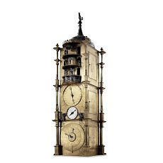
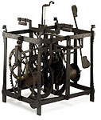
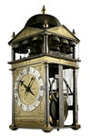
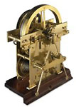
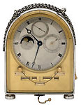

Department of Medieval and Modern Europe > galleries > Room 44
The
Horological Gallery
|  |
The
Horological Gallery |
|  |  |  |  |
|
Special
displays ‘Germany’ before
the late 19th century was not a unified country, but consisted of
a changing number (at times more than 300) of semi-independent principalities,
loosely organized under the Emperor of the Holy Roman Empire.
|
Spectacular
loans-in The
Burgundian table clock:
one of only two surviving examples of a spring driven clock made
in Burgundy during the reign of Philip the Good in the mid-15th
century.
On loan from the Victoria & Albert Museum, London.
|
More
galleries: 41
| 42 | 43 | 44 |
45 | 46 | 47
| 48